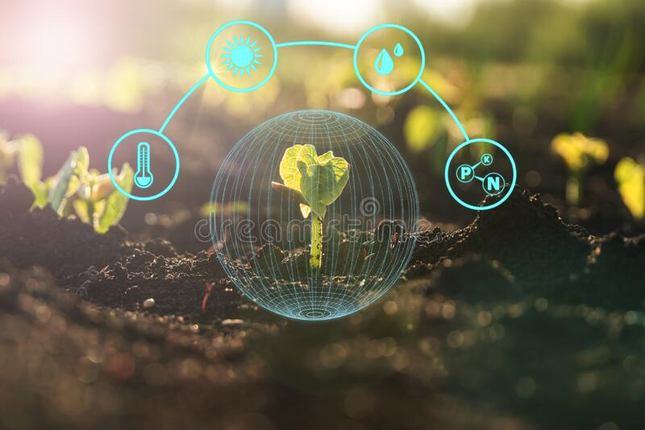

Immerse yourself in nature.
Make use of smart city technology.
To teach people with little or no gardening expertise how to grow vegetables in the most efficient and resource-saving manner feasible.
Our smart garden is environmentally friendly. It helps in the minimization of greenhouse impact (global warming).
VISION
The Smart Garden project intends to create a product-service system with sophisticated technological and social capabilities that can govern major components of a public or private garden using the Internet of Things.
Thanks to the development of a multi-sensor system and a cloud platform for managing the collected data, it will be possible to intervene on factors such as the health of the garden and the people who visit it, air quality,
irrigation, lighting, atmospheric and sound pollution, and the overall sustainability of the system.

ABOUT

OUTLOOK
A sensible gardening method is implemented in this project.Based on both ambient sensor data and soil moisture data, the system can adjust the water delivery to the plants.
The garden area's lighting has also been taken care of.
The deep-learning system has effectively managed the plant health-care department.
In addition, the garden can bring individuals from all over the world together, which is one of its unique selling points.
Growing vegetables, medicinal plants, herbs, fruits, etc. at home using AI-powered machines are characteristics of an urban farmer.
The aim is to hyper localise food production irrespective of environmental temperature, negligible farming and gardening expertise and in less time.
The food industry will become hyper-localized and experimental.
People will be able to produce exotic plants and herbs instead of buying them at expensive rates from the market.
Making use of this technology in farming and gardening accessible and affordable at the grassroots level will be another groundbreaking evolution of humanity.
WORKING PROCEDURE
CONTACT
| Rijutha | 7090555198 |
| Monica | 8660588938 |
| Fatima | 8861859590 |
| Jyotishmati | 7483508782 |